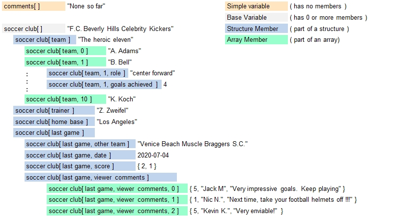

Introduction
B4P lets you create variable trees which consist of structures, arrays or free combinations of both and with quasi unlimited
number of hierarchical levels. Availabe memory space is the only limitation. The illustartion below shows the impressive structures
you can build up rapidly with a few write accesses:

Building Variable Trees with Member Variables using Arrays and Structures
With Beyond4P, you can create simple variables as well as arrays (containing numbered member variables) and structures (containing named member variables). Full nesting flexibility is supported: Arrays and structures may contain further structures and/or arrays as you wish. In short, the variable storage model is a tree structure which can hold data in the root node (base variable), intermediate nodes (e.g. member variable also containing sub-members) and leaf nodes (final member variables without further members defined).
| Variable Form | Description | Example |
|---|---|---|
| Simple Variables | Simple variables hold one base variable value of any data type (numeral, string, date, boolean, void and paramter set) and contain no members. | last name[] |
| Arrays | In addition to the base variable, arrays a defined number of numerically indexed members | member [1], member[3] |
| Structures | In addition to the base variable, structures contain one or more named member variables | animal[dog], animal[cat] |
| Zero Members | Very similar to simple variables. Contains base variable and zero members, but has previously had array or structure members which have been deleted meanwhiel. The variable form changes to structure if a structure element is added, or to array if an array member is added. |